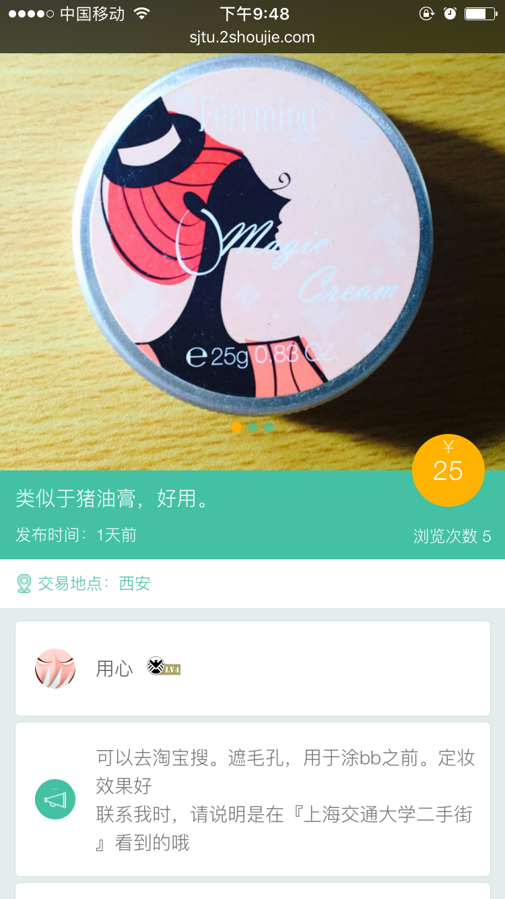

校园二手街---前端
开始于：2014-07-11，结束于：2014-10-09
作品链接校园二手街是我去年考研前参与的最后一个项目，原网站已经是个较为成熟的产品，我的工作是对它进行维护修改、添加新页面和新建手机端的web页面。
这个产品是从冰岩作坊出去的一个创业团队开发的，团队挺赞的，参与其中的我也学到了不少东西。但由于当时比较忙，对于整个过程中碰到的一些问题也没来得及作出总结。最近我将项目中自己的代码部分抽离了出来，想进行一下整理。抽离出的部分后面会附上链接。
网页版 手机版我偷了个懒，网站和手机版分别给的链接，手机版的链接也可以用chrome打开，然后打开开发者工具栏中的 Emulation。至于二手街成品上是后台进行的判断，针对不同的平台给出不同的资源。我所了解的一种判断方法，就是js或后台语言对请求头部的用户代理字符串进行分析，如判断是移动设备，就将链接跳转至“/mobile”下。其实如果能做到两个平台上基本共用 html 结构，倒是可以使用 media queries 判断窗口宽度来提供不同的样式表，不过图片的大小是个问题，这个方案的可行性我还没试过，可能会在自己主页上试验一下。
下面我会根据 tower 上的任务记录的顺序来回忆一下当初碰到的一些问题。
1. 手机商品详情页
这个也是我写过的第一个手机页面，遇到的问题自然也多多。
首先是手机端页面的调试。我主要使用的 Chrome 中的设备Emulation，它直接可以在开发者工具中开启，模拟的效果和真机上webkit内核浏览器呈现的效果没有多少出入，出现的问题也比较少。UC 和 QQ浏览器的问题会多点，例如对 CSS3 的一些特性支持性不好，position: fixed 的一些“副作用”会很奇怪。这些问题当时没能都记录下来也是有点遗憾。
针对 UC 的调试我试过UC浏览器开发版，但由于当时我的手机和电脑通过 USB 连接不上，折腾了半天我觉得太麻烦就算了，发现是因为我的USB线坏了就是后话了……其实也是因为通常遇上的问题不大。
如果还想兼容 windows phone，就会麻烦一些。IE 也内置有 WP 的仿真，但找小伙伴借真机测试时发现实现会有一点出入。印象最深的就是写幻灯时触摸事件的绑定。首先，IE 有自己的一套触摸事件：pointerdown、pointerup、pointermove，但仅仅是注意到这个还是不够的，因为这些事件还可能需要加上 ms 前缀。好的，我进行了修改，并且在 IE 上仿真成功，结果发现在 WP 上滑动效果还是出不来。直到干脆将 event.type alert 一下，才发现都是 ms 前缀的大小写闹的。
其实这些问题也还好解决，我觉得比较棘手的是在手机 chrome 上滑动动画时会有很严重的白色闪动，而且这一点是在电脑上仿真时看不出来的。
搜索了一下，网上很多说这种现象是 Chrome 渲染 Transition 时的 Bug，也尝试着按照别人的方法尝试了，也使用 -webkit-transform:transition3d(0,0,0) 或-webkit-transform:translateZ(0); 来开启GPU硬件加速模式，但我的问题还是解决不了。
苦闷了一小会儿，还是继续找资料。也可能不是 transition 的问题，而是 chrome 页面渲染的问题。幻灯我使用的列表，父元素设置了 overflow: hidden，这样隐藏的 li 出现在视窗中时，页面进行重绘，就出现了闪动。给元素设置 -webkit-transform: translateZ(0); 可以触发重绘，这样问题就解决了，这个方法据说还可以解决一些chrome下别的渲染问题，可以深挖一下。
2. 网站改版部分
感觉前面的作品总结做的有点啰嗦……有些内容还是总结到文章中比较好，后面我就只将问题简单提一提，也是给自己回忆一下今后要总结的点。
首先是新增的商品发布规则页面和学号认证页面，这两个很常规，也没什么好提的。
接下来是新增的积分反馈动画，见前面的链接。
这一部分可能比较费神，有五个不同等级图标，七个积分增加的情况，环形的颜色动画表示当前你的积分水平，当颜色积满，图标翻转提示升到了下一等级。这里的实现我的想法其实很简单，就是用 div 实现了两个半圆和一个正圆，通过圆形的 rotate 旋转来实现环形色条的增长。其实这个最后实现起来有点麻烦，特别是当进度要经过1/2这个位置时，还有一次颜色变换，容易造成卡顿。其实这里也可以使用 canvas 绘制，只是兼容性要多做一点。
还有两个存在的问题，一个是浏览器的 transform: rotate 旋转其实不是很精确，虽然将圆点设在了圆心，但当半圆从左完全旋转至右方时会有一点不对齐的现象；二是当页面内容太多，动画也会卡。是我平时写这些东西时对性能优化之类的考虑的太少，对浏览器效率想的太理想，这个地方以后需要注意。
网页上其余问题不多了，主要就是 IE 的兼容，这个还是单独写文章总结吧。
3. 加入我们
再一个好玩的一点的页面就分别是桌面和移动版的加入我们页面。其实还是 CSS3 特性带来的一些渲染问题。
PC版 Join Us 移动端 Join Us4. 手机版的其余页面
第一个手机页面也出来后，其余的其实也就轻松了，而且这个不再是在几个人的代码基础上进行增加，自己完全建立的话就可以比较方便的将几个页面共同的功能提取出来，尽量避免重复代码量。
最新评论.
该文章目前没有任何评论！